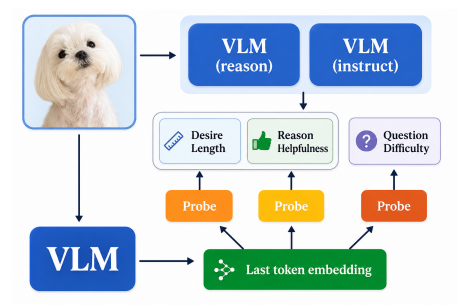
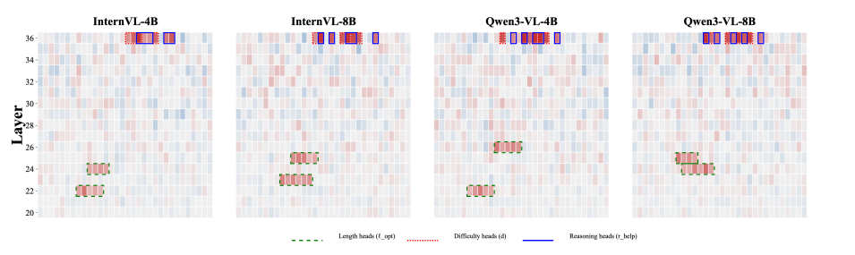

Does Reasoning Improve Seeing? Understanding When Vision-Language Models Benefit from Thinking
关键问题：同一道视觉题，显式推理可能帮助答对，也可能让回答偏离图像。能否在答案生成前预测推理收益，并找到控制“说多长”和“怎样推理”的内部位置？
关键做法：先用 Instruct / Thinking 两个版本的多次回答构造经验标签，再从生成前的隐藏表示训练线性探针；通过逐头消融定位相关注意力头，最后在生成时缩放这些头的输出，检查行为是否改变。
核心判断：这篇有价值的地方是把“可读出的信号”推进到了“可干预的生成行为”。但作者尚未完整验证逐题自适应控制器，结果也不足以直接证明模型“看得更好了”。尤其要区分：能预测推理收益、能改变回答、能改善视觉依据的使用，是三个不同命题。
1. 背景信息
- 作者与团队：Jing Bi、Luchuan Song 等；University of Rochester、University of Sydney、University of Central Florida 与 Corning Incorporated。
- 版本：ICML 2026，PMLR 306:8063–8075。正式页面；正式 PDF。本笔记依据 2026-11-03 获取的 13 页版本，正文为 PDF 第 1–9 页，后续为影响声明、致谢和参考文献。
- 材料边界：已阅读全文并核对关键图表；没有运行模型或复现实验。下文位置均指这一 PDF，
[?]表示原文尚不足以确认。
2. 关键问题：要预测的是额外推理的收益，不只是题目难度
Golden Case：同一张柱状图，两种问题。以下为便于理解构造，并非论文实验样本。
图上 A、B 两组数值分别为 20、30。问题一问“B 是多少”，直接读图即可；问题二问“B 相比 A 增长百分之多少”，需要先读出数值，再计算 $(30-20)/20=50\%$。
但不能据此断言问题一绝不需要思考、问题二必然受益于长推理。对于某个模型，直接回答也可能已经能算对；Thinking 版本也可能错误读取坐标、选错分母。真正要测的是：给定模型和解码设置，多思考是否提高了这道题的正确率？
固定 token 预算或一律开启 CoT 都忽略了这种逐题差异。本文把问题拆成两个控制目标：
- Reasoning helpfulness，$r_{\mathrm{help}}$：Thinking 相对 Instruct 的正确率增益。
- Desired length，$\ell_{\mathrm{opt}}$：在更可靠的版本中，观察到的最短正确回答长度。
这里的 Instruct / Thinking 是同一模型家族、规模的两个对齐版本，并非本文在同一个固定 checkpoint 上只切换一句提示词。因此，两者差异包含训练所得能力和回答方式的差异，不能全部归因于推理 token 本身。
3. 关键方法：先造标签，再读表示，最后干预生成
3.1 沿着柱状图案例走一遍
对“增长百分之多少”这道题，流程是：
- 离线生成标签：两个版本各采样 10 次，抽取最终选项并与标准答案比较。假设 Instruct 答对 4 次，Thinking 答对 8 次，则 $r_{\mathrm{help}}=0.4$；再取 Thinking 版本 8 次正确回答中最短的一次作为长度标签。这里的次数仅用于说明定义，不是论文数据。
- 读取生成前状态：把图像和题目送入模型，只做 prefill，读取最后一个 prompt token 在最后一层的隐藏向量。此时答案还没生成，探针不能直接看到未来回答是否正确。
- 训练三个探针：分别预测推理收益、期望长度和题目难度。主模型冻结，训练的是线性回归器或线性分类器。
- 定位头部：逐个关闭注意力头，观察探针输出如何变化，据此选择一小组头。
- 验证行为控制：在真正生成回答时放大或抑制这些头，测输出长度与答题正确率是否变化。
第五步验证的是干预效果。把第二、三步接成“新题来了，自动选择直答或思考、自动调节干预”的控制器，是作者提出的使用方式；§3.2 明确说，本文主要把探针用于分析和头部归因，没有给出完整控制器的端到端评估。

来源：正式 PDF，Figure 4，第 6 页。图的关键是两条路径：多次生成用于离线监督；探针的输入则是生成前的最后 token 表示。不要把造标签的成本误认为每次使用探针都要付出的成本。
3.2 两个标签究竟测到了什么
令 $m\in\{\mathrm{Inst},\mathrm{Think}\}$，每种版本采样 $K=10$ 次。用 $c_m^{(k)}\in\{0,1\}$ 表示第 $k$ 次回答是否正确，则（§3.1）：
$r_{\mathrm{help}}>0$ 表示在这个模型对和采样协议下，Thinking 更可靠。它不是题目固有的“需要推理程度”；换模型、温度或采样次数，标签都可能改变。
长度标签先比较 $\hat p_m$，选正确率更高的版本 $m^\star$；正确率相同时，选最短正确回答更短的版本。然后：
若某版本没有正确回答，原文将其最短正确长度置为 0；两边都失败时，最终长度标签也为 0。
这个定义有两个重要后果。第一，观察到一个短答案能答对，不等于把 token 上限设到这个长度就能稳定答对：短回答可能是偶然猜中，也可能省略了外显步骤。第二，0 在这里表示“未观察到成功”，不能理解为“零推理成本即可解决”。因此，$\ell_{\mathrm{opt}}$ 更适合作为经验性的回答长度目标，尚不是因果验证过的最小充分计算预算。
两个连续目标用独立线性回归器 $\hat y_t=w_t^\top h+b_t$、MSE 损失训练；难度 $d\in\{\mathrm{easy,medium,hard}\}$ 用单独的线性 softmax 分类器。Instruct 与 Thinking 探针预测同一套标签，只更换输入表示，比较线性可读性（§3.2）。
3.3 从探针敏感性到生成干预
在注意力头拼接后的输出投影之前，把某个头的输出乘以系数 $\alpha$。$\alpha=0$ 为消融，$\alpha=1$ 为不干预，$\alpha>1$ 为放大。设消融头 $(l,i)$ 后的最终表示为 $h^{-(l,i)}$，归因分数为（§5.3）：
它测的是“这个头被关闭后，探针的判断变化多大”，不是直接测该头完成了多少推理。作者还比较不同样本组的归因差 $\Delta_{l,i}$，寻找具有方向差异的头。
生成干预分为两类（§6.2）：
- 长度控制：缩放与 $\ell_{\mathrm{opt}}$ 相关的头，系数取 $0.5,1.0,1.5,2.0$。
- 推理倾向控制：放大一组头，同时抑制归因方向相反的另一组；主要强干预设置为 $(\alpha_{\uparrow},\alpha_{\downarrow})=(2.0,0.1)$。作者进一步按模型总层数的一半，把被选中的 reasoning heads 分成低层与高层子集。
为什么还要同时抑制另一组？作者认为，单纯放大 reasoning heads 可能主要增加啰嗦程度；一边增强、一边抑制，才更有机会改变行为方向。这里的“perception heads”只是基于正负归因构造的对照集合，作者也没有把它定义为独立的语义模块。
复现时有一处不能忽略的写法差异：§5.3 说按 $|\Delta_{l,i}|$ 排头，§6.2 对长度和 reasoning 集合又写成按 $|A_{l,i}|$ 排头；两者是否用于不同阶段、具体如何衔接，文中没有充分交代 [?]。也需区分采样次数 $K=10$ 与头集合大小 $K=16$，两处 $K$ 含义不同。
4. 数据与设置：主要机制分析来自一个较小的样本池
基础数据是 MMMU-val900，按 70/15/15 划分训练、验证、测试集；按该比例分别为 630、135、135 题。论文说明探针训练、头排序和干预选择使用训练或验证集，测试集只用于报告结果（§3.2、§4.3）。
探针实验包含 InternVL-4B/8B、Qwen3-VL-4B/8B/32B 的 Instruct / Thinking 成对版本。头部分析与主要干预聚焦两家族的 4B/8B Thinking 版本；32B 的证据是探针扩展，不能当作已经验证了 32B 上相同的干预效果。温度和 top-p 保持固定，但正式 PDF 没有给出具体值，也未完整列出探针正则化、训练超参和 checkpoint 标识。
另一个决定解释边界的设置是样本分组（§5.2、§6.3）：
- “Perception-dominant”是 $r_{\mathrm{help}}$ 最低的 20% 样本；
- “Reasoning-dominant”是 $r_{\mathrm{help}}$ 最高的 20% 样本。
这是按观察到的推理收益分组，不是由独立标注者判断“这题只需感知/这题必须推理”。 例如柱状图计算题，如果 Thinking 在该模型上表现更差，也可能被归入前一组。论文提到比较 $q=0.2/0.3$，但没有完整展示两者的对照数表。
5. 关键结果：表示可读、长度可控，但语义解释仍需收紧
5.1 Thinking 的表示更易解码，预测能力仍不算强
Table 2 比较相同标签、相同划分下两类表示训练出的线性探针。下表每格均为 Instruct → Thinking；$\rho$ 为 Spearman 相关系数，长度 MAE 单位为 token。
| 模型 | $r_{\mathrm{help}}$ MSE ↓ | $r_{\mathrm{help}}$ $\rho$ ↑ | $\ell_{\mathrm{opt}}$ MAE ↓ |
|---|---|---|---|
| InternVL-4B | 0.182 → 0.141 | 0.324 → 0.412 | 42.3 → 38.7 |
| InternVL-8B | 0.168 → 0.119 | 0.341 → 0.458 | 40.1 → 35.2 |
| Qwen3-VL-4B | 0.194 → 0.153 | 0.298 → 0.389 | 45.8 → 41.2 |
| Qwen3-VL-8B | 0.173 → 0.126 | 0.328 → 0.447 | 42.9 → 36.8 |
| Qwen3-VL-32B | 0.157 → 0.093 | 0.362 → 0.531 | 39.1 → 31.8 |
五组比较方向一致，支持 Thinking 版本中相关信息更容易被线性读出。作者将其解释为 reasoning-oriented training 重组了表示；但这仍是两个训练版本之间的比较，并非对训练因素逐项控制的因果实验。
最大模型的 $\rho$ 也只有 0.531，实际决定“是否开启推理”时，仍可能错判不少样本。MSE 更低不直接等于路由后的正确率更高，还需要收益符号判断、阈值校准和成本敏感的决策评估。
5.2 长度头与收益/难度头相对分开，但“电路”尚未被完整还原
Table 4 的 top-16 集合中，reasoning 与 difficulty 头的 Jaccard 重合度为 0.68–0.76；length 与 reasoning 头仅为 0.09–0.15。Table 3 改变集合大小后仍保持这一趋势。这支持“长度控制与收益/难度信号部分分离”，但不能单靠集合重叠证明难度信号在内部触发了推理。

来源：正式 PDF，Figure 5，第 7 页。绿色虚线圈出长度相关头，红色与蓝色圈出难度和收益相关头。可直观看到图中绿框比红蓝框低。需注意原文图表存在层号差异：图中的绿框约在 22–26 层、红蓝框约在 36 层，而 Table 3 报告的平均层号约为 15 和 27。两处对应关系未说明 [?]，因此不把这些绝对层号当作可直接复用的定位结果。
从证据强度看，这里定位的是影响探针输出的头集合，还没有还原头与头之间传递什么信息、怎样组合成计算过程。后面的生成干预增加了行为层面的因果证据，但“发现完整元认知电路”仍是更强的表述。
5.3 让模型多说或少说，比证明它用对了计算预算更容易
Table 5 中，InternVL-8B-Thinking 的平均生成长度为：
| 头输出缩放系数 $\alpha$ | 0.5 | 1.0，原模型 | 1.5 | 2.0 |
|---|---|---|---|---|
| 平均长度，token | 139 | 235 | 368 | 521 |
长度随缩放单调变化。以原模型 235 token 为参照，0.5 对应约 40.9% 的缩短，2.0 对应约 121.7% 的增长，均为根据原表计算；不能用摘要式的“±30%”概括这个扫描范围。
同表给出的准确率变化是 −0.8%，但图注明确说它比较 $\alpha=0.5$ 和 $2.0$ 两端，没有给出缩短版相对原模型的准确率差。因此，表格支持输出长度可控、两端准确率差异较小；尚不能据此宣称“节省 40.9% token 而准确率只损失 0.8%”。文中列了与 $\ell_{\mathrm{opt}}$ 对齐的评估目标，也未提供足够结果证明控制后的长度更接近逐题最优预算。
5.4 最大收益出现在预先划分的子集，整体提升小得多
Table 6 报告不同深度干预在对应子集上的效果：
| Thinking 模型 | 低层干预：低收益子集 ΔAcc | 高层干预：高收益子集 ΔAcc | Overall ΔAcc | 长度增长 |
|---|---|---|---|---|
| InternVL-4B | +3.2% | +4.1% | +0.8% | +28% |
| InternVL-8B | +4.1% | +5.3% | +1.2% | +31% |
| Qwen3-VL-4B | +2.8% | +3.7% | +0.6% | +25% |
| Qwen3-VL-8B | +3.6% | +4.9% | +1.1% | +29% |
保留原文 ΔAcc 的 % 写法。论文未明确解释这些变化量按百分点还是相对增幅计算 [?]，不擅自换算。Overall 一列具体怎样汇总低层/高层设置，正文也未充分说明，不能当作已报告的自动路由收益。
最值得记住的不是抽象的“提升 5.3%”，而是：对不同收益分组，干预不同深度的头产生不同效果；同一行整体增益为 1.2%，并伴随更长输出。 这提示模型内部存在可操纵的行为差异，但还需要等 token 或等延迟比较，判断实际计算效率是否改善。
Table 7 在 InternVL-8B-Thinking 上扩展到 MathVista、ScienceQA、ChartQA、A-OKVQA，报告相同方向的现象；例如 MathVista 的 low/high 增益分别为 +3.8%/+4.9%。这增加了跨任务证据，但 §6.3 只说重复同一干预协议，没有清楚说明是否冻结 MMMU 选出的头与系数、完全不做目标域校准，不宜升级为已经验证的零样本跨数据集迁移。这几组增益也没有给出充分的多种子不确定性报告。
6. Insights
6.1 “推理无益”不等于“视觉感知占主导”
这是我最在意的定义问题。低 $r_{\mathrm{help}}$ 可能来自纯感知题，也可能来自 Thinking 版本读错图、语言先验过强、算错或任务能力较弱。原文用这个收益标签命名感知/推理子集，再以子集增益解释视觉 grounding，语义上多走了一步。
下一步应增加独立视觉证据检验：遮挡关键区域、替换图像中的数值、构造只改视觉证据的反事实图，并比较干预前后答案是否随证据正确变化。对于前面的柱状图例子，只把 B 从 30 改成 40，模型是否把 50% 改为 100%，比“回答变短了”更直接地检验它有没有重新使用图像信息。
6.2 最短成功样本可以做描述标签，不宜直接用作停止规则
$\ell_{\mathrm{opt}}$ 取有限样本中的最小值，采样越多越容易碰到短且正确的回答；全部失败又被编码为 0。这样学出的长度预测混合了效率、偶然成功和失败状态。
如果要做真正的预算控制，我会把目标改为：在多个受控预算 $b$ 下估计 $P(\mathrm{correct}\mid b,I,x)$，再优化正确率与成本的权衡；至少将“无成功样本”单列，而不是给它零长度。代价是离线标注更贵，但目标与部署动作直接对应。
6.3 最该补的是从 oracle 分组走向真实决策的那一步
本文的有用链条是“探针可读 → 头部定位 → 生成干预”。缺的闭环是：新题仅凭当前预测决定干预，不借助事后真实收益分组，然后在完整测试集上计入误判与额外成本。
一个有区分力的后续实验应同时比较：始终 Instruct、始终 Thinking、简单置信度路由、本文探针路由，以及加入头部干预的路由；在同一 token/延迟预算下报告准确率，并保留接近零收益时的回退机制。头部定位还应加入同层随机头、相同数量随机头与输出长度匹配对照，检验收益是否特异于选出的集合。当前正式 PDF 没有完整提供这些证据。
7. 连接与发现
- Reinforced-Attention-Learning-RAL：对照通过训练改变视觉注意力的路线；本文则在固定模型中寻找可干预位置，两者都需要单独检验视觉证据是否真正被更好地利用。
- TACT-Mitigating-Overthinking-and-Overacting-via-Activation-Steering：同样把内部状态转为可控信号；可比较根据当前状态触发的纠偏，与本文主要用于机制分析的头部缩放之间的区别。